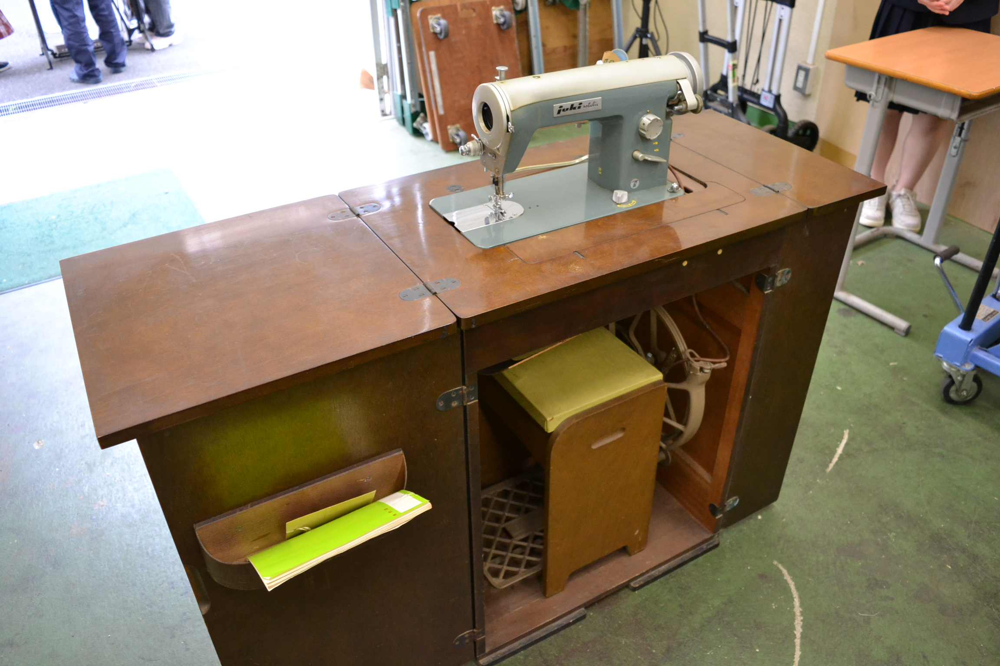
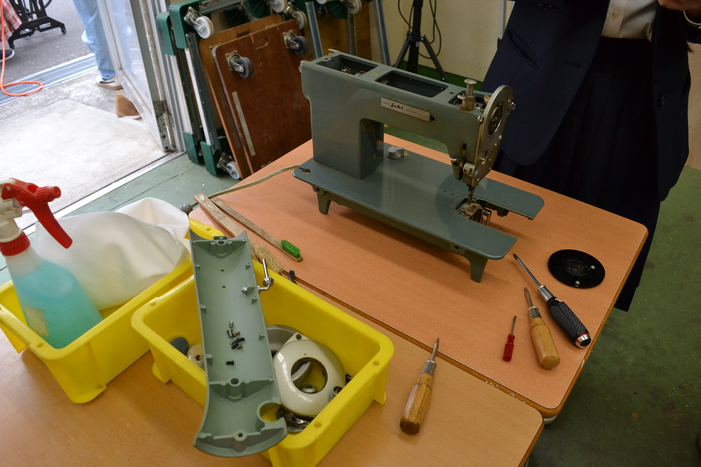
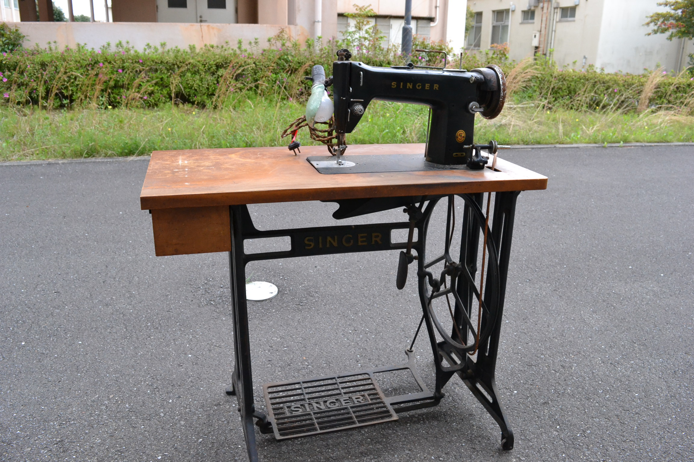
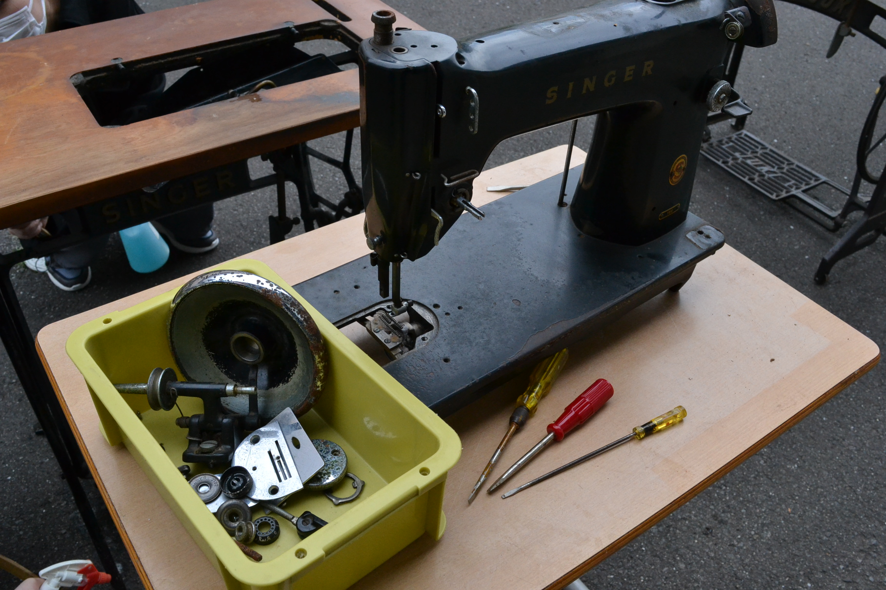
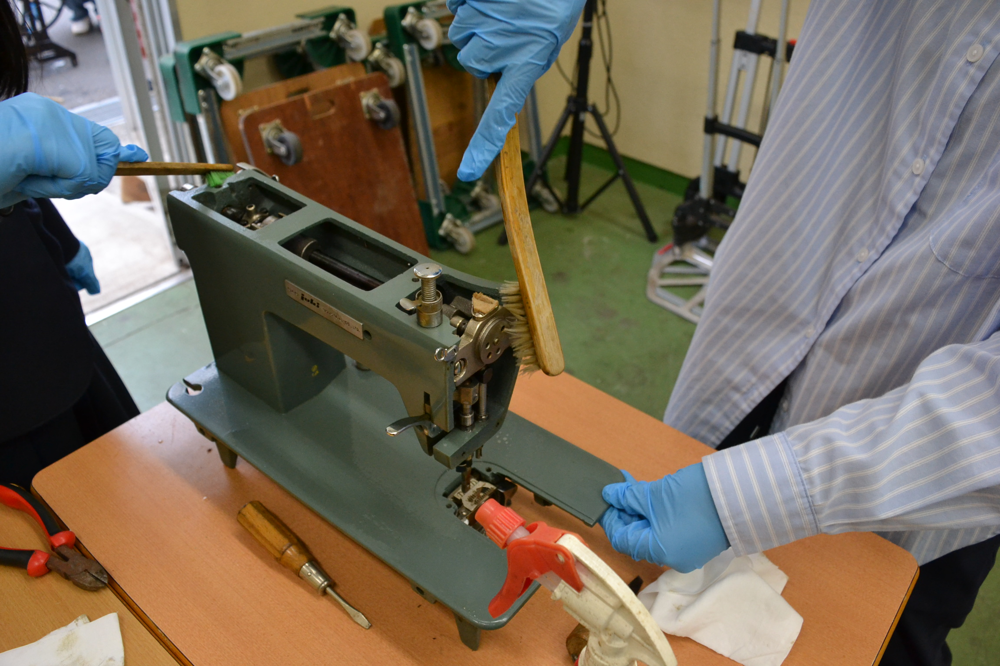
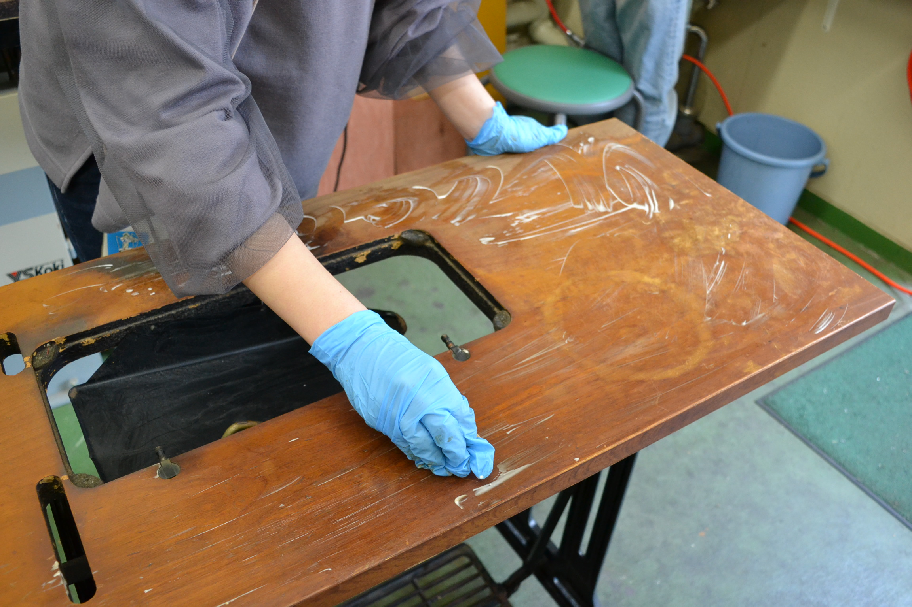
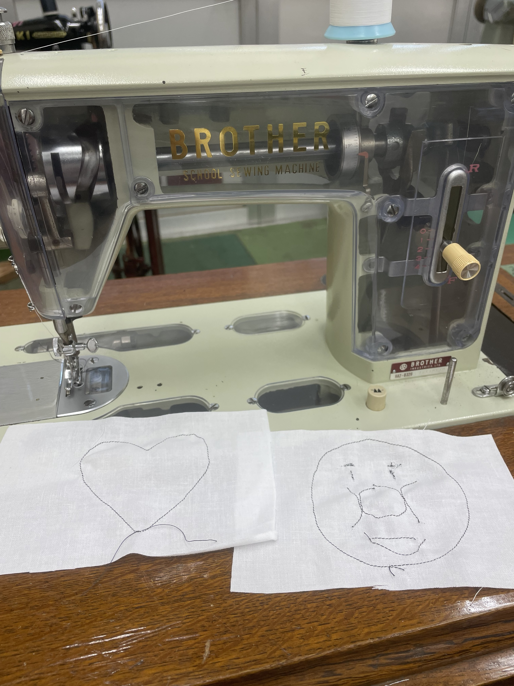

ミシン修理の流れ
基本的に4～6人で1つの足踏みミシンを担当し、3～4週間かけて修理します。足踏みミシンは年代やメーカーによって構造が違うので、修理の工程や部品が必ずしも同じものになるとは限りません。今回は足踏みミシン修理の大体の流れを紹介します
分解
まず、机とミシンをつなぐベルトを切断し、机とミシンを離します。その後、机担当とミシン担当に分かれます。ミシン担当はミシンをドライバーなどで分解します。この際、壊れている部品があれば新しい部品に交換します。

⇓


⇓
汚れを落とす
机担当はエアーでホコリを落として、金属部分を磨き、ワックスをかけたら終了です。終わり次第ミシン担当を手伝います。 ミシン担当は分解した部品をひたすら磨きます。

⇒
ミシン本体の組み立て
分解した部品を初期状態に戻るように組立てます。これが1番時間がかかる作業で先生方に助言をいただきながら取り組んでます。

仕上げ
ミシンと机を新しいベルトで再び繋げ、ミシンが滑らかに動くように油をさします。その後針を取りつけ糸を通します。最後に試し縫いを行い、完了します。